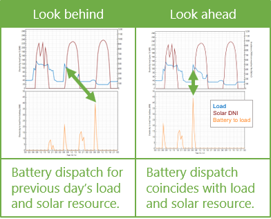

Battery Dispatch BTM#
The Battery Dispatch page for behind-the-meter (BTM) batteries displays inputs for controlling the timing of battery charging and discharging. For inputs that describe the battery’s performance characteristics, see the Battery Cell and System page.
Charge Limits and Priority#
The Charge Limits and Priority inputs are constraints on the battery dispatch calculations.
The limits on minimum and maximum state of charge affect both the amount of energy available for battery dispatch calculations, and the depth of charge-discharge cycles for battery life calculations. Choose values appropriate for the type of battery you are modeling. The default values state of charge range of 15% to 95% is reasonable for most Li-ion battery types.
- Minimum state of charge, %
A limit on the quantity of energy that can be drained from the battery as a percentage of available capacity. For example, a value of 15% would prevent the battery from discharging below 15% of the battery’s available capacity in a given time step.
Note
The minimum and maximum state of charge are both as a percentage of available battery capacity, which changes over time as the batteries degrade and are replaced. The available capacity in a given time step is likely to be less than the battery’s nominal capacity shown on the Battery Cell and System page.
- Maximum state of charge, %
A limit on the quantity of energy that can be sent to the battery as a percentage of available capacity. For example a value of 95% would prevent the battery from charging above 95% state of charge.
- Initial state of charge, %
The state of charge of the battery at the beginning of the simulation. A value of 100% would be for a fully charged battery, 0% would be for a fully discharged battery.
- Minimum time at charge state, min
There may be periods of time where the photovoltaic or other power system output varies above and below the load causing rapid cycling of the battery. Rapid cycling may also result for dispatch options that respond to power prices when prices change rapidly from time step to time step. This kind of cycling, especially if the cycles are deep, may degrade battery performance over time. The minimum time at charge state prevents the battery from changing between charging and discharging within the number of minutes that you specify.
Note
The minimum time at charge state only applies when the simulation time step is smaller than the minimum time at charge state. For example, the default value of 10 minutes would only apply for 5-minute or 1-minute simulation time steps; It has no effect for hourly simulations.
Behind-the-meter (BTM) Storage Dispatch Options#
The battery dispatch options determine when the battery charges and discharges. The charge options determine any limits on how the battery can charge or discharge.
Dispatch Options#
Choose the dispatch option that most closely represents when you want the battery to charge and discharge.
Note
The list below provides a brief description of each option. To see a detailed description of each heading, click the appropriate grey and blue heading below to expand the detailed description.
If you are modeling grid outages to calculate resiliency metrics, during an outage the battery switches to a special dispatch mode that prioritizes meeting the load, regardless of the dispatch option you choose.
- Peak shaving
Dispatch the battery to reduce peak demand. Use this option when the electricity rate structure includes energy rates with kWh/kW units or demand charges and you want to use the battery to reduce billing demand.
- Input grid power targets
Dispatch the battery in response to time series grid power target data you provide to ensure the power from the grid is at or below the target power levels.
- Input battery power targets
Dispatch the battery according to time series charge and discharge power values you provide. Use this option when you know exactly how you want the battery to charge and discharge.
- Manual dispatch
Dispatch the battery based on month-by-hour weekday and weekend schedules you provide. Use this option to dispatch the battery in response to time-of-use electricity rates.
- Retail rate dispatch
Dispatch the battery to minimize the energy and demand charge portions of the monthly electricity bill.
- Self-consumption
Dispatch the battery to minimize power to and from the grid.
Charge Options#
The charge options control how the battery can charge and discharge. SAM enables and disables (greys out) the options as appropriate for the dispatch option and whether the battery is DC- or AC-connected.
- Battery can charge from grid
Allow power from the grid to charge the battery.
- Battery can charge from system
Allow the photovoltaic array or other power system to charge the battery.
- Battery can charge from grid-limited system power
Allow the battery to charge from power in excess of the interconnection limit or from curtailed power when the interconnection limit is enabled and/or curtailment is specified on the Grid Limits page.
- Battery can charge from clipped system power
For a photovoltaic array with DC-connected battery, allow the photovoltaic array to charge the battery when the array DC power exceeds the inverter nominal DC input power.
- Battery can discharge to grid
Allow the battery to discharge to the grid.
- Charge from system only when system output exceeds load
Allow the photovoltaic array or other power system to charge the battery only when the system AC output is greater than the load.
- Discharge battery only when load exceeds system output
Allow the battery to discharge only when the load is greater than the photovoltaic or other power system AC output.
- Battery can charge from fuel cell
For system with fuel cells, allow the battery to charge from the fuel cell. (This option is only visible for fuel cell configurations.)
Peak Shaving#
The peak shaving dispatch options attempt to discharge the battery during times of peak demand over a forecast period. Peak shaving dispatch considers the load, and either the available solar resource for PV systems, or the AC output for other systems over the forecast period and calculates a grid power target for each time step in that period. It then charges or discharges the battery as possible given the battery’s capacity and state of charge to meet the target. Use this option to reduce monthly demand charges when the rates on the Electricity Rates page include demand rates.
Peak shaving discharges the battery each day to reduce that day’s peak load. This results in more battery cycling than would result from a dispatch strategy that discharges the battery once a month to reduce the peak load.
For a detailed description of the behind-the-meter peak shaving dispatch algorithm, see DiOrio, N. (2017). An Overview of the Automated Dispatch Controller Algorithms in SAM. NREL/TP-6A20-68614. (PDF 770 KB)
Peak Shaving Option#
- One day look ahead (perfect)
For each day, dispatch the battery based on the solar resource over the next 24 hours and the load over the forecast horizon specified below. The look-ahead option is a perfect prediction of the load and solar resource because the battery dispatch coincides with the solar resource and load.
- One day look behind
Similar to the one-day look ahead option, but based on the previous 24 hours of solar resource for the prediction. The look-behind option adds some uncertainty to the dispatch because the battery dispatch coincides with solar resource for the previous day, so the battery dispatch for each day may not exactly match the solar resource.

Note
SAM allows you to use a different forecast period for the solar resource and the load. Choose both a peak shaving option and a load forecast horizon option as appropriate for your analysis.
- Custom forecast
Combines one day look ahead dispatch with a different weather file than the one used for the photovoltaic system simulation. This makes the dispatch more realistic because the battery dispatch does not exactly match the the photovoltaic system output.
For the custom forecast option, click Browse to choose the a weather file to use for battery dispatch.
Load Forecast Horizon#
- Perfect look ahead
For each day, dispatch the battery based on the load specified on the Electric Load page over the next 24 hours and the solar resource over the period specified above.
- One day look behind
Similar to perfect look ahead, but based on the previous 24 hours of load data.
- Look ahead to custom load
Similar to perfect look ahead, but dispatches the battery based on different load data than the data on the Electric Load page.
- Custom load profile
For the Look Ahead to Custom Load Forecast option, the load data to use for the dispatch forecast instead of the data on the Electric Load page.
Click Edit array to import or paste custom load data for the dispatch forecast.
- Match load growth
For the Look Ahead to Custom Load Forecast option, use the same load growth rate for the forecast load as the load data on the Electric Load page.
- Enter custom growth
For the Look ahead to Custom Load Forecast option, use a different load growth rate than the load data on the Electric Load page.
- Load forecast growth rate
For the Look Ahead to Custom Load forecast option with Enter Custom Growth, the annual growth rate for the custom load profile.
Input grid power targets#
The input grid power target option is similar to the peak shaving option, except that it attempts to operate the battery in response to grid power targets that you specify instead of automatically calculating the targets to reduce peak demand. In each time step, SAM compares the electric load to the power target, charges the battery when the load is less than the target, and discharges when the load is greater than the target. You can specify either twelve constant monthly targets, or a target for each time step.
Note
The system may not always be able to meet the grid power targets, for example, if the battery is discharged when the photovoltaic array or other power source is not generating power.
Choose Input grid power targets, and then choose either Monthly power targets or Time series power targets:
- Monthly power targets
Choose this option to specify a either a single grid power target for the entire year by setting the grid power target for all months to the same value, or a different grid power target for each month.
For Monthly grid power targets, Click Edit values to specify the targets. To apply a single target to the entire year, enter the target as a single value in the Edit Values window and click Apply.
- Time series power targets
Choose this option to enter a grid power target for each time step in the simulation. For Time series grid power targets, click Edit array to specify the targets.
Input battery power targets#
The input battery power targets option operates the battery in response to battery power targets you specify. In each time step, the controller attempts to charge to the negative power value you enter, or discharge to the positive power value you enter.
Choose Input battery power targets, and then enter the battery power target data.
- Time series battery power targets
Click Edit array and import or copy and paste an array of battery power values in kW, where discharge power is positive, charge power is negative. The array must have the same number of rows as simulation time steps: For hourly simulations, 8,760 rows, for for 15-minute simulations 35,040 rows, etc.
Note
For standalone batteries, the time step for time series power targets must be the same as the simulation time step, which you can set on the Battery Time Step page.
Manual dispatch#
For the manual dispatch option, you specify the timing of battery charges and discharges using up to six dispatch periods and a set of weekday and weekend hourly profiles by month under Manual Dispatch.
- Charge from system
For each period that you want to allow the battery to be charged by power from the system, check the box in the Charge from system column.
- Charge from grid
For each period that you want to allow the battery to be charged by power from the grid, check the box in the Allow column, and specify the percentage of the battery’s state of charge that can be charged from the grid over the time step in the Rate column.
For example, for hourly simulations, a charge rate of 25% would allow the battery to charge from the grid at 25% of its state of charge at the beginning of the time step over the time step. The purpose of this rate is to avoid damaging the battery by charging it too quickly.
Note
For subhourly simulations, the charge and discharge percentages apply to the subhourly time step even though the periods are defined in hours.
For a behind-the-meter application, if Charge from grid and Charge from system are both checked for a given period, and if in a time step in that period the system power is greater than the load, power from the grid supplements the system power to meet the battery charge requirement.
If Charge from grid and one or both of the discharge options is also checked for a given period, and if in that period the battery state of charge is above the minimum state of charge, the battery discharges until it reaches the minimum state of charge, at which point it starts charging from the grid, either until it reaches the maximum state of charge, or until the time period changes to one that does not allow charging from the grid.
- Discharge to load
For each period that you want to allow the battery to discharge to the load, check the box in the Allow column, and specify the percentage of the battery’s available charge that can be discharged to the load over the time step in the Rate column.
For example, let’s assume that Period 3 is the four consecutive hours between 3 pm and 6 pm, the discharge rate is 25%, and the minimum and maximum state of charge limits under Charge Limits and Priority are 30% and 96%, respectively. For an hourly simulation, that would allow up to 25% of the battery state of charge at the beginning of the 3 pm hour to be discharged over the hour. For the 4 pm hour, 25% of the charge at the end of the 3 pm hour would be available, and so on until the end of Period 3. The 25% discharge rate would result in the battery being fully discharged over the four-hour period. (A 20% value would have the same effect for a 5-hour period, i.e., if Period 3 were between 3 pm and 7 pm.)
For a one-minute simulation, a discharge rate of 25% would allow up to 25% of the available charge to be dispatched every minute over Period 3, so a smaller percentage would be required to allow the battery to discharge over the full four-hour period.
- Discharge to grid
The battery can only discharge to the grid during time steps that it is allowed to discharge to the load. For each period that you want to allow the battery to discharge to the grid, check the box in the Allow column. SAM uses the same discharge rate for discharges to the load and the grid.
- System power priority
Use this option to determine how to prioritize electricity from the power generating system (PV array or custom generation profile). This option is not available with the Charge from system only when system output exceeds load option.
Choose Meet load to prioritize using system power to meet the load over charging the battery.
Choose Charge battery to prioritize using system power to charge the battery over meeting the load.
- Weekday and Weekend Schedules
The weekday and weekend schedules determine the hour of day and month of year for each of the up to six dispatch periods. SAM ignores the charge and discharge options for any periods that you do not assign to the weekday or weekend schedules.
To define the hour of day and month of year that each period applies, use your mouse to select a rectangle in the schedule matrix, and use your keyboard to type the period number (1-6). The number you type should appear in the rectangle.
See Weekday Weekend Schedules for a step-by-step description of how to use the schedule matrices.
Copy Schedules from TOU/TOD Schedules Use this button to copy the the weekday and weekend schedules from the energy charge time-of-use schedule on the Electricity Rates page.
Retail rate dispatch#
The retail rate dispatch option operates the battery to minimize the electricity bill based on an estimate of retail electricity price that represents the cost to the system owner of purchasing electricity from the grid in each time step. For this option, battery dispatch depends on:
A rolling 24-hour forecast of system power generation and load as defined under Generation Forecast Horizon.
Energy and demand rates (flat, time-of-use, and/or tiered)
Battery state of charge and available capacity
Battery degradation
Cost of future battery replacements
The original implementation of the retail rate dispatch option is described (as “price signal forecast”) in Mirletz, B.; Guittet, D. (2021). Heuristic Dispatch Based on Price Signals for Behind-the-Meter PV-Battery Systems in the System Advisor Model. NREL/CP-7A40-79575. (PDF 2.2 MB)
Generation Forecast Horizon#
The generation forecast horizon determines whether the battery dispatch responds to a perfect forecast of the system’s output, or to a forecast that is different from the system’s output over the forecast period.
- Perfect look ahead
For each day, dispatch the battery based on the system’s output over the next 24 hours.
- One day look behind
Similar to perfect look ahead, but based on the system’s output over the previous 24 hours. This adds some uncertainty to the dispatch because yesterday’s generation profile is likely to be different from today’s.
- Look ahead to custom weather file
For the PV Battery configuration, use a different weather file for the generation forecast than for simulating the system’s power output. Use this option when you want the battery dispatch to be more realistic by not responding exactly to the system’s output.
- Weather file for retail rate dispatch
The weather file to use for the Look Ahead to Custom Weather File option. Click Browse to choose a weather file in the SAM CSV format .
Load Forecast Horizon#
The generation forecast horizon determines whether the battery dispatch responds to a perfect forecast of the building or facility’s electric load, or to a forecast that is different from the load over the forecast period.
- Perfect look ahead
For each day, dispatch the battery based on the load specified on the Electric Load page over the next 24 hours.
- One day look behind
Similar to perfect look ahead, but based on the previous 24 hours of load data.
- Look ahead to custom load
Similar to perfect look ahead, but dispatches the battery based on different load data than the data on the Electric Load page.
- Custom load profile
For the Look Ahead to Custom Load Forecast option, the load data to use for the dispatch forecast instead of the data on the Electric Load page.
Click Edit array to import or paste custom load data for the dispatch forecast.
- Match load growth
For the Look Ahead to Custom Load Forecast option, use the same load growth rate for the forecast load as the load data on the Electric Load page.
- Enter custom growth
For the Look ahead to Custom Load Forecast option, use a different load growth rate than the load data on the Electric Load page.
- Load forecast growth rate
For the Look Ahead to Custom Load forecast option with Enter Custom Growth, the annual growth rate for the custom load profile.
Cycle Degradation Penalty#
The cycle degradation penalty is an estimate of the cost of charge-discharge cycles that makes it possible to account for the effect of cycling the battery on the cost of battery replacements. More frequent charge-discharge cycles can result in faster degradation of the battery and more replacements over the analysis period. Increasing the cycle degradation penalty causes the price signal forecast dispatch algorithm to attempt to reduce the frequency of battery charge-discharge cycles.
Note
Battery degradation and replacement parameters are on the Battery Life page.
- Cycle degradation penalty method
Choose a method for estimating the cost of cycling the battery:
Choose Calculate automatically if you want SAM to calculate the cost.
Choose Enter penalty to enter a cost per cycle-kWh value.
If you choose the Calculate Automatically option, SAM reports the calculated penalty as Computed cycle degradation penalty in the battery time series results.
- Cycle degradation penalty
The penalty in $/cycle-kWh of battery total capacity for cycling the battery. You can either enter a single value, or click to enter a different penalty for each year of the analysis period as an annual schedule .
Self-consumption#
The self-consumption dispatch option dispatches the battery to minimize power to and from the grid.
This dispatch option is equivalent to the input grid power targets dispatch option with the grid power target set to zero for all time steps.